Konverzija prezentacije u druge formate
Ukoliko treba da držite prezentaciju na tuđem računaru, a niste sigurni da li je taj računar dobro opremljen za prikaz vaše prezentacije, istu možete snimiti u nekoliko različitih formata.
- Html
- prikaz prezentacije moguć u bilo kojem web browser-u.
- Pdf
- Adobe Portable Document Format, za prikaz ovog formata vam je potreban neki od čitača pdf dokumenata — najpoznatiji je Adobe Acrobat Reader.
- Swf
- Prikaz prezentacije u Macromedia Flash formatu. Takođe može da se prikaže u bilo kojem web browser-u koji ima Flash plugin.
Prezentaciju konvertujete tako što u traci sa padajućim menijima odaberete File / Export.
Tada vam se prikaže prozor u kojem zadajete ime (File name) dokumenta i format (File format)u koji želite da izvršete konverziju.
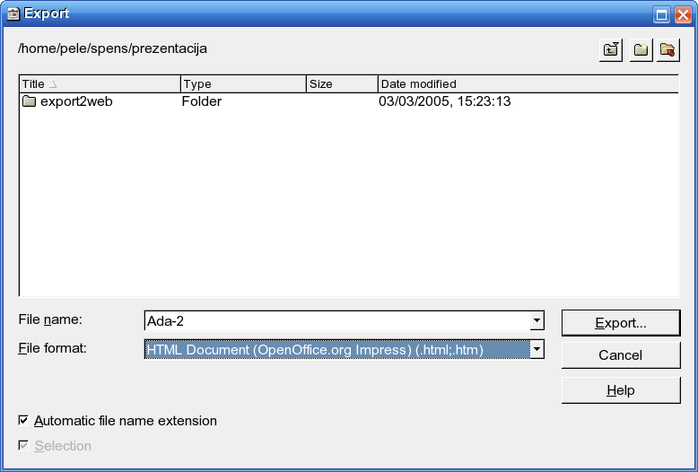
Ukoliko želite da sačuvate prezentaciju u swf formatu, konverzija se ne razlikuje od običnog snimanja dokumenta, dok kod konverzije u html i pdf morate da podesite određene parametre.
Izvoz u pdf.
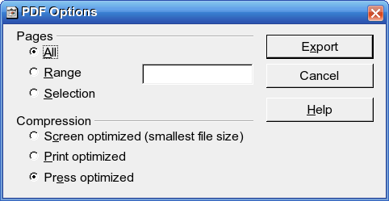
Prozor je podeljen na dva segmenta.
- Pages
- stranice (slajdovi) koje se konvetuju.
- All
- konvertuje sve slajdove.
- Range
- konvertuj slajdove u određenom opsegu (po broju stranica).
- Selection
- konvertuj obeležene slajdove.
- Compresion
- kompresija snimljenog dokumenta (kvalitet).
- Screen optimized (smallest file size)
- optimizovano za prikaz na ekranu najmanji dokument.
- Print optimized
- optimizovano za štampač.
- Press optimized
- optimizovano za novinsku štampu.
Izvoz u html.
Ovo je najkompleksniji izvoz prezentacije i ima nekoliko koraka.
Korak 1.
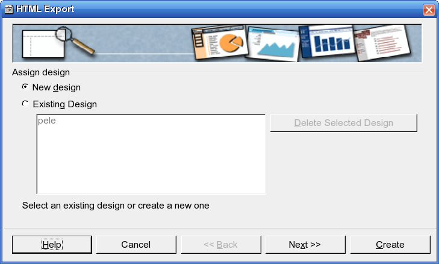
Birate dizajn prezentacije
- New Design
- novi dizajn.
- Existing Design
- postojeći dizajn.
Korak 2.
Ovde birate tip prezentacije. I imate nekoliko varijanti izbora.
Varijanta 1.
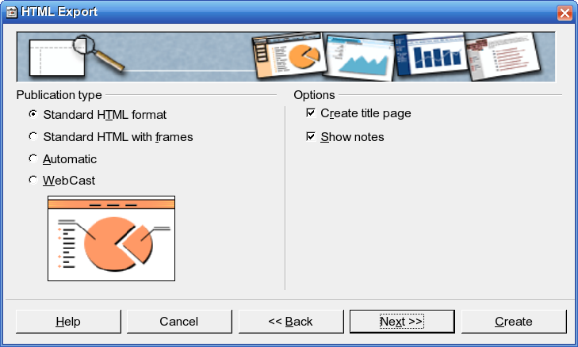
- Standard HTML format
- standardni html format.
- Standard HTML with frames
- standardni html sa okvirima.
U segmentu Options
- Create title page
- kreiraj naslovnu stranicu.
- Show notes
- uključuje i prikazuje beleške ukoliko ste ih pisali.
Varijanta 2.
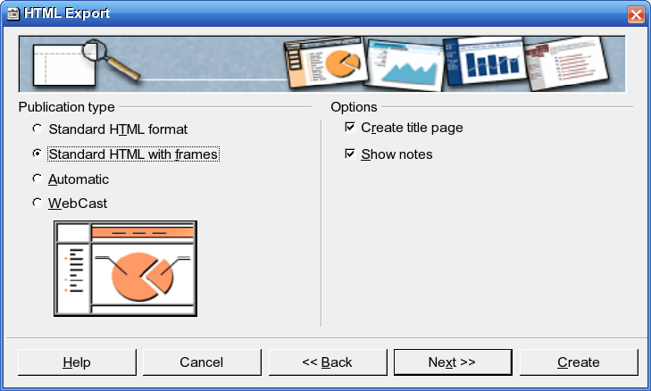
Varijanta 3.
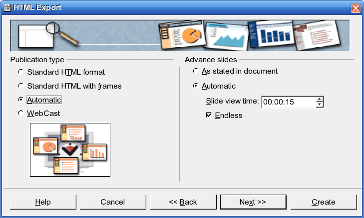
- Automatic
- program će sve automatski odraditi za vas.
- U segmentu Advance slides
- imate opcije vezane za promenu slajdova.
- As stated in document
- slajdovi se menjaju onako kako ste definisali u samoj prezentaciji prilikom njenog kreiranja.
- Automatic
- slajdovi se automatski menjaju, ali morate da zadate vreme (Slide view time) koje želite da prođe između promene dva slajda. Eventualno možete naglasiti da želite da se prezentacija vrti u krug opcija Endless.
Varijanta 4.
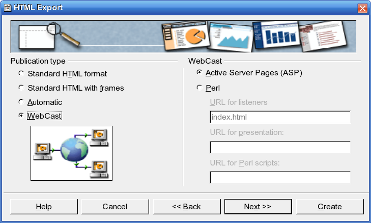
- WebCast
- prezentacija će biti prilagođena postavljanju na web server. Možete da odaberete da li će se generisati koristeći ASP © ili Perl skript jezike.
Korak 3.
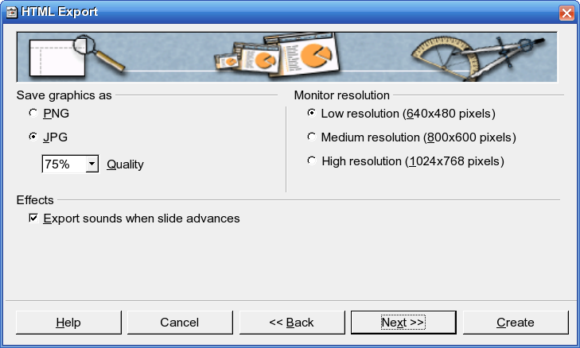
U ovom koraku birate tip slika koje vaša prezentacija izvozi, rezoluciju u kojoj će biti prikazane i da li se uključuju zvučni efekti.
Segment Save graphic as.
- PNG
- snimi slike u png formatu.
- JPG
- snimi slike u jpg formatu.
- Quality
- kvalitet slika.
- Segment Monitor Resolution
- optimizacija za prikaz na monitorima različite rezolucije.
- Low resolution (640x480 pixels)
- niska rezolucija ekrana 640x480 piksela.
- Medium resolution (800x600 pixels)
- srednja rezolucija ekrana 800x600 piksela.
- High resolution (1024x768 pixels)
- visoka rezolucija ekrana 1024x768 piksela.
Segment Effects.
- Export sounds when slide advances
- uključuje zvučni zapis koji prati promenu slajda u html prezentaciju.
Korak 4.
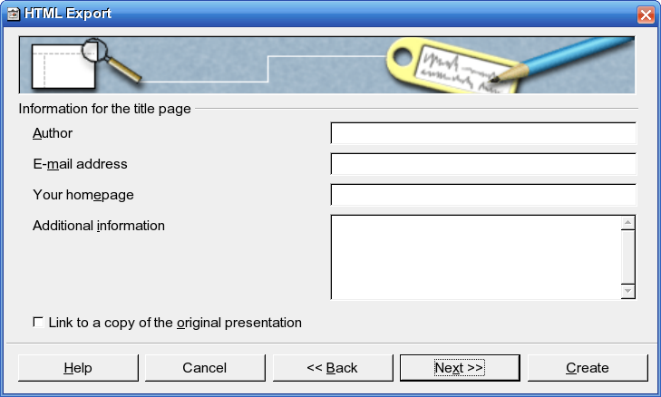
U ovom koraku unosite podatke o autoru, e-mail adresu autora, web stranicu autora i dodatne informacije.
- Author
- Ime i prezime autora prezentacije.
- E-mail address
- e-mail adresa autora.
- Your homepage
- adresa web prezentacje autora.
- Additional information
- dodatne informacije o autoru.
- Link to a copy of the original presentation
- dodaje link prema originalnoj prezentaciji.
Korak 5.
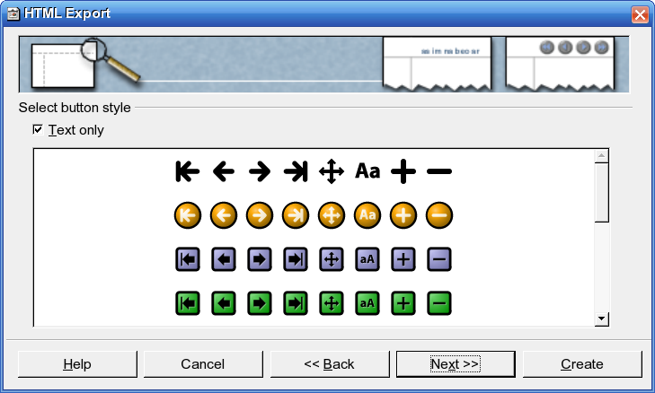
Birate izgled dugmadi koja će se koristiti za navigaciju prezentacije ili odabirate tekstualnu navigaciju Text only.
Korak 6.
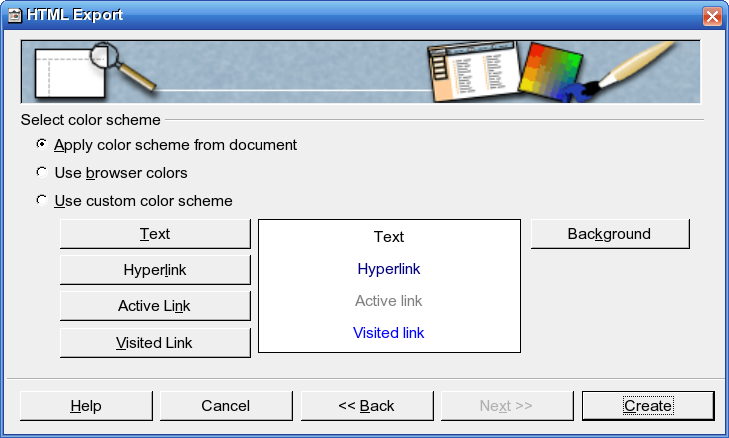
Podešavate opcije vezane za boje teksta određenih delova prezentacije.
Korak 7.
Odlučujete da li želite da snimite podešavanja dizajna pa da ih koristite za neku drugu prezentaciju.
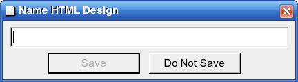